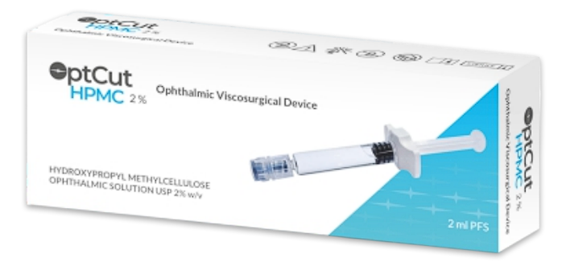
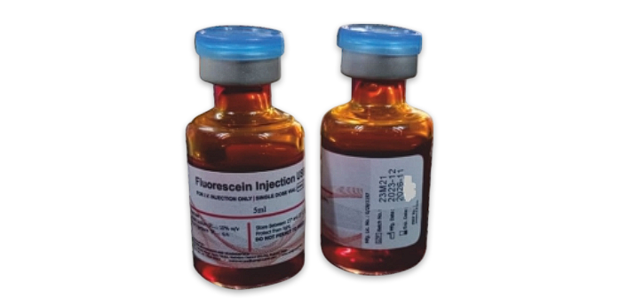
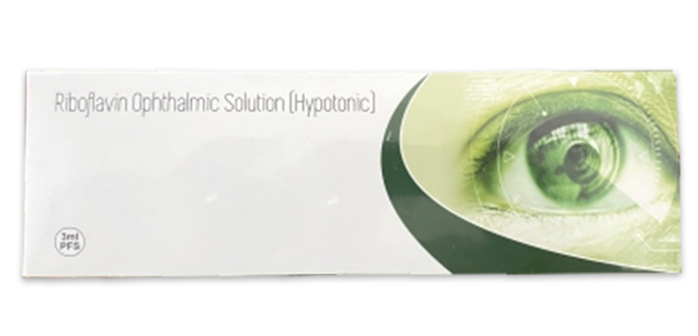
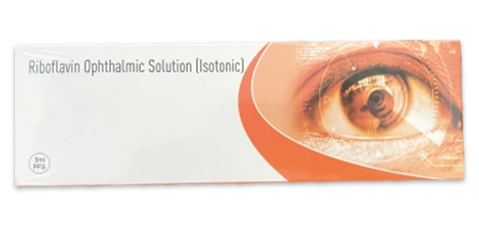
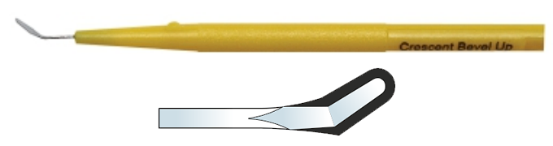
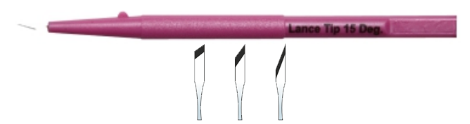
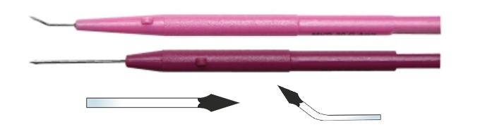
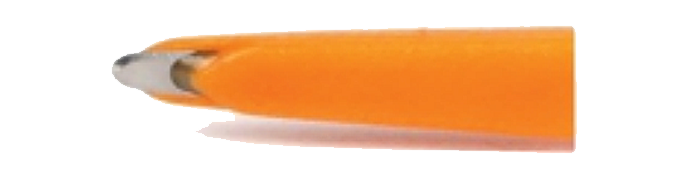

ABOUT US
Our Categories
Ophthalmic Sterile Solutions
Ophthalmic Micro Surgical Knives
Phaco Emulsification Consumables
Ophthalmic Surgical Consumables
Ophthalmic Pharmaceutical
Ophthalmic Surgical Instruments
Ophthalmic Training Devices
DISTRIBUTION OPPORTUNITIES
CONTACT US
Home
>
Our Categories
Product Categories
Ophthalmic Sterile Solutions
Ophthalmic Micro Surgical Knives
Phaco Emulsification Consumables
Ophthalmic Surgical Consumables
Ophthalmic Pharmaceuticals
Ophthalmic Surgical Instruments
Training Devices
Ophthalmic Sterile Solutions
Ophthalmic Sterile Solutions
OptCut Na-Hyaluron PFS
Premium injection-grade quality sodium hyaluronate material
Optically clear, highly cohesive, easy to aspirate
High Zero-Shear Viscosity (300,000–1,200,000 m.pas at 25ºC)
High Molecular Weight (>2.8 Million Dalton)
Increased protection to corneal endothelium and ocular tissues
1 ml in pre-filled glass syringe with easy-to-peel blister packing
Sterile, pyrogen-free, non-inflammatory, double filtered
Synthetic fermentation — no risk of viral infections
Store at room temperature — no refrigeration required
Supplied with 27G angular cannula

OptCut HPMC PFS
Optically clear, sterile, non-pyrogenic solution
Premium ophthalmic grade HPMC in balanced salt solution, double filtered
Double pouched for safety
Consistent viscosity
Easy-open flip-down seals to vials
Store at room temperature — no refrigeration required

Fluorescein Injections
Diagnostic ophthalmic dye for corneal staining and angiography
Sterile, pyrogen-free, preservative-free
Reduced side effects — safe and effective for diagnostics

Riboflavin Hypotonic
Indicated for progressive keratoconus, post-LASIK ectasia, pellucid marginal degeneration, bullous keratopathy, infectious keratitis, progressive hyperopia post radial keratectomy, scleral cross-linking, pathological myopia
For corneas < 400 microns
Epithelium debridement necessary (Epithelium-Off)
Variants: 3 ml vial or 3 ml prefilled syringe + 23G cannula

Riboflavin Isotonic
Indicated for progressive keratoconus, post-LASIK ectasia, pellucid marginal degeneration, bullous keratopathy, infectious keratitis, progressive hyperopia, scleral cross-linking, pathological myopia
For corneas ≥ 400 microns
Epithelium debridement necessary (Epithelium-Off)
Variants: 3 ml vial or 3 ml prefilled syringe + 23G cannula
Ophthalmic Micro Surgical Knives
Ophthalmic Micro Surgical Knives
Keratome / Slit Knives (Sharp Point Tip)
Designed for making precise width micro incisions
Straight or double-bevel available
Keratome / Slit Knives (Enlarger Blunt Point Tip)
Designed for width enlargement of micro incision as per IOL requirements
Straight or double-bevel available

Crescent / Tunnel Knives
Designed for creating scleral tunnel pockets or grooves

Lance Tip / Stab Knives
Designed for making initial limbal or sideport corneal incisions
Clear Corneal Knives
Unique parallel sharp sides for visual reference when changing planes
Double-bevelled

MVR / Sideport Knives
For sideport incisions in cataract procedures or water-tight self-sealing micro incisions in VR procedures

Restricted / Controlled Depth Knives
Designed to create grooves and limbal relaxing incisions
Phaco Emulsification Consumables
Phaco Emulsification Consumables
Vitrectomy Cutters
Aktive Cutter
Geuder Cutter
MidLABS
Available gauge sizes: 20g, 23g, 25g, 27g (anterior/posterior disposables)
Vitrectomy Cutters (Geuder)
Disposable cutters for vitreoretinal procedures
Vitrectomy Cutters (MidLABS)
Disposable cutters for vitreoretinal procedures
Fiber Optic Illumination Cable
High-intensity surgical illumination in ophthalmic procedures
Available in 20g, 23g, 25g, 27g (standard fiber / with depressor)
Retinal Chandeliers
Provide wide-field illumination during vitreoretinal surgery
Available in multiple gauges
Ophthalmic Trocars
Used to create safe and precise sclerotomy ports
Gauge options available
Laser Probe
Delivers laser energy for retinal photocoagulation and related procedures
Available connectors and fiber types including extensible and 0–90° options
Tweezers / Forceps
Precision instruments for handling delicate ocular tissues
ILM Elevators
Soft silicone safe for retina surface
Diamond-dusted tip to elevate membrane edge
Retractable and non-retractable versions
Sterile, 5/box
Ophthalmic Surgical Consumables
Ophthalmic Surgical Consumables
K-Pro (Keratoprosthesis)
Product image to be provided
Pupil Expansion Ring
Aurolab i-Nova – Preloaded delivery system
Octa
Dry Amniotic Membrane
Aqueous Drainage Implant (AADI)
Non-valved glaucoma shunt for refractory glaucoma, failed trabeculectomy, neovascular, congenital, uveitic glaucoma
Made of implantable grade silicone
Fixation holes for suturing to sclera with 8-0 or 9-0 nylon
Ophthalmic Sutures (6402N)
10-0 Nylon black monofilament
Advanced micro point spatula double-armed needle
Diameter: 0.15 mm, Length: 6.0 mm, 3/8 circle 140°, Suture length: 30 cm
Aurostent
Silicone rod length – 40 mm; diameter – 0.64 mm
Maintains alignment after lid repair; anchorable at puncta; soft, pliable silicone
Aurosling
Frontalis suspension sling for ptosis surgery
Listed with US FDA
Easy insertion, good cosmesis, malleable needles, tiny silicone sleeve for post-op adjustment
Iris Hooks / Capsular Hooks
Iris Hooks: flexible polypropylene, adjustable silicon stopper, easy to insert/remove
Capsular Hooks: nylon with silicon lock, angled tip, rounded tip to prevent capsule damage
Silicone Band
For scleral buckling in retinal detachment surgery
Medical grade silicone (USA), free sleeve with each band
Lacrimal Intubation Set
Disposable cannula for treatment of canalicular stenosis or nasolacrimal duct obstruction
Capsule Support Segment
Partial PMMA ring for zonular weakness or lens subluxation
Blunt-tipped eyelets, additional eyelet for fixation, special scleral arm angle
Indications: extreme zonular weakness, missing zonules > 4 clock hours, lens subluxation
Ophthalmic Cannulas
Incyto Needle
Suprachoroidal Injection
Sterilization Trays
Body made of thermo-resistant polymer
Suitable for steam, dry heat, EO, chemical and gamma sterilization
Amber lid for viewing, stackable design, silicone mats and holders
Ophthalmic Pharmaceuticals
Ophthalmic Pharmaceuticals
Injections
Triamcinolone Acetonide Injection — anti-inflammatory / immunosuppressive indications
Indocyanine Green Injection — contrast agent for vascular imaging
Moxifloxacin Ophthalmic Solution — broad-spectrum antibiotic
Voriconazole Powder for Injection — antifungal for deep fungal infections
Eye Drops
Atropine Sulfate — mydriatic / anti-inflammatory
Brimonidine Tartrate — lowers intraocular pressure (glaucoma)
Proparacaine Hydrochloride — local anaesthetic
Cromolyn Sodium — allergy treatment
Lignocaine Hydrochloride — anaesthesia / pupil dilatation
Flurbiprofen — postoperative pain / inflammation
Homatropine — dilating agent
Tropicamide with Phenylephrine — pupil dilation for examination
Cyclopentolate — for eye examination, uveitis treatment
Prednisolone Sodium Phosphate — anti-inflammatory
Latanoprost — glaucoma therapy (reduces IOP)
Cyclosporine — for dry eyes
Ketorolac Tromethamine — post-operative pain and inflammation
Moxifloxacin Hydrochloride — topical antibiotic
Olopatadine — allergic conjunctivitis
Voriconazole Powder — antifungal for ocular infections
Ophthalmic Surgical Instruments
Ophthalmic Surgical Instruments
Meyerhoefer Chalazion Curette
4 — 3.5 mm dia (Ref No.: OC-40259)
Jewelers Forceps (Angled)
Ref No.: OC-55390 / OC-55389 / OC-55386 (delicate variants)
Vannas Capsulotomy Scissors (Straight)
Ref No.: OC-60548
Barraquer Solid Blade Lid Speculum
8 mm, Pediatric (Ref No.: OC-10104)
Castroviejo Tying Forceps
Double Ended Dissector / Spoon
Lenticular Forceps / Removal Forceps
SMILE Instruments
Training Devices
Training Devices
Training Devices
Contact us for detailed training device catalogue and images